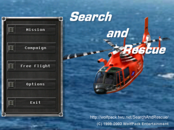
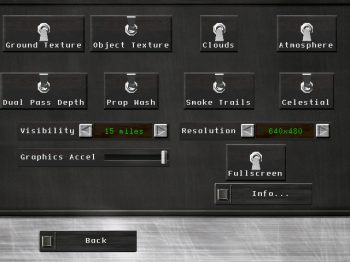
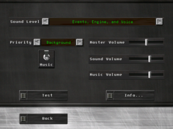

Running
Typically Search and Rescue is installed in
/usr/games/SearchAndRescue for the UNIX/X version and
in its own directory under the name SearchAndRescue.exe
for the Win32 version.
Simply create a short cut to the program file, the
short cut command should look something like the following.
For UNIX/X:
/usr/games/SearchAndRescue
For Win32:
D:\GAMES\SEARCHANDRESCUE.EXE
If you would like to get a list of command line arguments that you
can add to the short cut command, run a console and type:

At this point you should try running Search and Rescue from a
console to see if there are any problems. The most common problems are
graphics problems in which case the program is unable to start
up properly, if you encounter any problems please read the
Frequently Asked Questions. If Search and Rescue is able to run
properly, then you should be able to see the main menu (as shown
on the right).
Do not worry about running Search and Rescue in windowed mode or full
screen at start up, you can always adjust things later once the program
is running correctly.
When the program is running you can switch from windowed mode
to fullscreen mode by pressing CTRL + F11. To
change the resolution (in windowed or fullscreen
modes) press CTRL + [ or CTRL + ].
[
Graphics

To modify the graphics options, go to Options->Graphics..., there you
can adjust simulation detail, graphics acceleration, resolution, and
much more. Important settings are explained below.
- Celestial - Toggle the display of the sun, moon, and overall
lighting.
- Dual Pass Depth - Toggle the double rendering per frame in order to
display heightfields more accurately.
- Object Texture - Toggles the texturing of objects, note that this
will affect certain ground objects used as plots, mountains, and
landmarks.
- Resolution - Changes the resolution (the size of the window).
- Graphics Accel - This influences frame rate versus cpu usage. If
you find a delay in the response of the program then lower
this value, otherwise increase it.
To change the graphics options during simulation see
Environment Scenery Details.
[
Sound

To modify the sound options, go to Options->Sound..., there you
can adjust the sound level, volumes, and toggle the music.
It is important that you have your sound server running before
you enable sound. To enable sound increase the Sound Level.
Important settings are explained below:
- Priority - Specifies the DirectSound cooperation level (Win32
only, UNIX/X is always set to Background)
- Master Volume - Adjusts the mixer's volume level (not available on
Win32).
- Sound Volume - Adjusts the mixer's PCM (aka Wave) volume level.
- Music Volume - Adjusts the mixer's MIDI volume level.
[